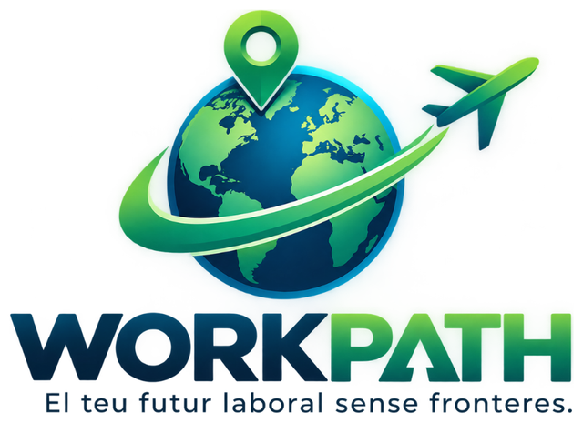

¿Quiénes somos?
Somos una plataforma de orientación informativa pensada para estudiantes, recién titulados y profesionales que buscan oportunidades laborales internacionales sin perderse entre trámites confusos.
Te orientamos sobre visados de trabajo, organizamos tus documentos y te acompañamos paso a paso. No tramitamos visados: te ayudamos a prepararlos.

En WorkPath ayudamos a personas que quieren dar el paso de trabajar fuera de su país a entender qué opciones reales tienen según su perfil.
Somos una plataforma de orientación informativa pensada para estudiantes, recién titulados y profesionales que buscan oportunidades laborales internacionales sin perderse entre trámites confusos.
Nos dedicamos a organizar y presentar información orientativa sobre tipos de visados de trabajo, requisitos habituales y vías de acceso según el país de destino y el perfil de cada persona.
A través de un breve cuestionario, filtramos y ordenamos las alternativas disponibles, mostramos fichas claras con documentos, pasos y plazos orientativos, y te guiamos para empezar con la opción que mejor encaja contigo.
Nota: WorkPath tiene un carácter orientativo e informativo; no tramita visados ni sustituye a fuentes oficiales, embajadas o asesoría legal.
Selecciona una opción en el menú superior o accede a tu cuenta para gestionar tus trámites.